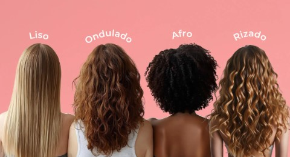
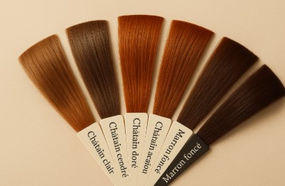

¿Cuáles son los tipos de cabello?

Cada persona tiene un tipo de cabello diferente, y conocerlo es fundamental
para darle el cuidado adecuado. El tipo de cabello influye en los productos
que debes usar y en la rutina que debes seguir.
Clasificación de los tipos de cabello
- 💁♀️ Cabello lacio: Es suave, brillante y sin ondas.
- 🌊 Cabello ondulado: Tiene forma de ondas suaves.
- 🌀 Cabello rizado: Forma rizos definidos.
- 🌟 Cabello afro: Tiene rizos muy pequeños y voluminosos.
Características de cada tipo
Cada tipo de cabello tiene necesidades específicas:
- ✨ El cabello lacio se engrasa más rápido.
- ✨ El ondulado puede tener frizz.
- ✨ El rizado necesita más hidratación.
- ✨ El afro es más delicado y seco.

¿Por qué es importante conocer tu tipo de cabello?
Conocer tu tipo de cabello te ayuda a elegir los productos correctos
y evitar daños. También te permite crear una rutina personalizada
para mantenerlo sano, fuerte y bonito.